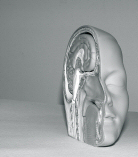

A lo mejor usted también discute con su cerebro; pacta acuerdos, entabla luchas y negocia decisiones. De hecho, significativas batallas se llevan a cabo en las redes neuronales del mundo, algunas se libran para sobrevivir, otras para controlar la supervivencia de segundos y terceros. Con el tiempo aprendemos que no siempre lo que deseamos es lo que necesitamos y que, de vez en cuando, tendremos que sacrificar el placer que ciertos neurotransmisores nos brindan cuando efectuamos conductas específicas, con el fin de perdurar; en medio de lo que sea.
Ideas varias motivan a nuestros cerebros, ideas que nacen de ese equipo tan inseparable como incontestable compuesto por nuestra biología y el medio. Y a pesar de la inagotable discusión sobre si el origen de importantes elementos humanos es dictado por nuestra naturaleza o por mecanismos externos, cada vez más, los casos clínicos de asombrosos padecimientos genéticos y neuronales describen con perfección dramática cómo la contendida pareja se retroalimenta de forma persistente. En este sentido, la genética y la neurología se han ido colando, acompasadas pero constantes, en la explicación de decisiones tan culturales como el partido político que tenderemos a elegir o en esa idea actual de una sociedad que le rinde culto a las funciones del hemisferio izquierdo, desdeñando la intuición y la parte más “femenina” del órgano. Datos que, al parecer, ponen en alerta a los más espirituales sobre una supuesta ascendencia del materialismo científico que, para muchos, será la perdición de todos.
No son acontecimientos nuevos, sólo la fecha lo es. Cada cierto tiempo, el pensamiento conservador se levanta con más fuerza con el objetivo de acallar la razón. El progreso, que a pesar de nuestro terco primitivismo es imparable, tiene que guerrear para levantarse y mantenerse luego de los golpes sostenidos durante esas “edades oscuras” a las que nadie en su sano juicio quisiera regresar. Pero la gente no desea explicaciones sobre orígenes, ni lecciones; no quiere pensar. Por ello, la noción de un materialismo científico dominado por el hemisferio izquierdo parece bastante alejado de la realidad social actual. Además, el cerebro humano, para que trabaje de forma ideal, debe funcionar con ambos hemisferios en apropiada comunicación, en ese sentido, el dominio izquierdo podría definirse hasta como una condición (¿el desorden de Spock, quizá?), y aunque existe un sinnúmero de pruebas que aseguran descubrirle un hemisferio dominante luego de llenar algún formulario, la cosa no es tan simple. Una persona sin problemas neurológicos puede ser muy lógica en ciertos asuntos e hipersensible en otras cuestiones. El hecho de que alguien se decante por alguna creencia sobrenatural no lo hace irracional en todo lo demás, lo mismo ocurre con el pensamiento científico, seguir esa filosofía no lo convierte, irremediablemente, en un ente cien por ciento racional que no hace caso a intuiciones y desoye la parte artística en sus neuronas, tampoco en alguien a quien le sea imposible participar en actividades comunitarias. La red neuronal está conformada por áreas especializadas en funciones definidas pero también por las esenciales conexiones entre todas las regiones neuronales. Además, no podemos olvidar la influencia de los genes e, inseparablemente, del lugar donde formamos esas primeras conexiones sinápticas. No debe sorprendernos entonces que la medicina se esté transformando en una práctica cada vez más individualizada.
Obviamente, el objetivo de saber es alcanzar bienestar para todos. Más allá del negocio que es la medicina, de la reputación personal, los premios y el dinero, el avance científico que perdura es el que funciona, el que pasa la prueba del tiempo y de los científicos (cada uno con su agenda, personalidad y batallas neuronales propias) y nos ayuda a vivir mejor. Ese conocimiento estará siempre abierto a la transformación lo que ha permitido analizar más de cerca al genoma y su participación en la formación de las neuronas; esta cercanía ha transformado en poco tiempo a las ciencias de la conducta y uno de los mejores ejemplos se conoce con una sola palabra: “Williams”.

Es seguro que ha visto la imagen de la doble hélice que es la molécula de ADN; pues bien, durante la etapa de meiosis las cadenas en la espiral se separan para convertirse en el material genético del óvulo o la esperma. En individuos normales, la separación ocurre como si abriéramos un zíper, con cada mitad retirándose limpiamente de la otra; pero en las personas con la enfermedad, como 25 dientes de la alegórica cremallera (25 genes entre 30,000) se pierden durante la disgregación y cuando el segmento dañado va a emparejarse con el del otro padre para formar el embrión, ese fragmento con los genes perdidos no puede realizar correctamente sus labores. El resultado son los pacientes con Williams.
Existen varios componentes fascinantes en la investigación de este desorden, primordialmente porque es una enfermedad que modifica el comportamiento. Las personas con Williams son altamente sociables y una de las cualidades que los distingue es una auténtica capacidad para comunicarse. Su deseo de sociabilizar es tan alto que los obliga a modificar conductas con el fin de conectarse con los demás. De hecho, experimentos realizados con bebés han confirmado que desde temprana edad estos niños se lanzan a los brazos de extraños con más frecuencia que los grupos controles. Una de las pacientes más conocidas, entrevistada por David Dobbs para el New York Times en el 2007, Nicki Hornbaker, es descrita por su madre como una niña con una necesidad imperante de hablar con personas del sexo opuesto, tanto así, que a temprana edad comenzó a leer la sección de deportes de varios periódicos con el objetivo de sostener un diálogo duradero con la mayoría de los hombres a su alrededor. Este insondable deseo por socializar, por sostener la mirada del interlocutor con una intensidad que los diferencia de los demás, hace de Williams una enfermedad única para la investigación porque “su origen es una causa genética conocida que produce conductas y rasgos predecibles, es perfecta para estudiar no sólo cómo los genes crean la inteligencia y la sociabilidad sino cómo nuestro poder para pensar combinado con nuestro deseo para afiliarnos a otros crea una conducta social compleja, un inmenso terreno de interacción que determina ampliamente nuestras trayectorias”, escribió Dobbs para el diario neoyorquino.

El estudio de los pacientes con Williams también nos habla del papel de la evolución en el comportamiento. La amígdala, por ejemplo, se especializa, entre otras funciones, en enviar señales de miedo como una advertencia para obtener la conducta adecuada ante estímulos externos, como los gestos de ira en un rostro amenazador. En la enfermedad, la amígdala no reacciona a estas alertas sociales y otras similares, lo que promueve una socialización en exceso. “Es posible que las personas con Williams no lean estas señales sociales no porque no posean las herramientas cognoscitivas para hacerlo sino porque carecen de la motivación que en cerebros normales es condicionada por el miedo a los demás, un elemento que el resto de nosotros lleva a cada encuentro. Para muchos pensadores, la primacía de estos circuitos sugiere que la sociabilidad humana se origina de reforzados mecanismos evolutivos: el deseo inagotable de socializar y el miedo a hacerlo”, expresó Andreas Meyer-Lindenberg, neurólogo, psiquiatra e investigador de desórdenes mentales en el Instituto Nacional de la Salud Mental en Estados Unidos. En contraste con el autismo, cuyo origen aún se desconoce, en los pacientes con Williams observamos una relación consumada entre los genes, el desarrollo cerebral y el medio, cada elemento retroalimentando el otro.
No consigo establecer cómo el hecho de saber que nuestras conductas dependen de los genes, las neuronas y el medio traerá consigo la perdición de la humanidad. A lo mejor algún día hasta desarrollemos los nanomecanismos apropiados para arreglar el daño justo al momento de la meiosis, es la meta esencial de la investigación: conocer para arreglar. Sin embargo, el descubrimiento también nos dice mucho sobre los elementos que realmente guían nuestro comportamiento y nos explica por qué a veces sentimos que libramos una batalla perenne con aquel famoso homúnculo cerebral. De hecho, los neurólogos afirman que cada hemisferio tiene una personalidad propia, por lo que no debe sorprendernos que disolvamos acuerdos y rompamos pactos con nosotros mismos.
No obstante, estoy convencida de que saberlo sólo nos mejora; conocer lo que nos mueve y el origen de nuestros impulsos nos regala modos para alcanzar lo que realmente nos conviene: procedimientos efectivos que nos ayuden a perdurar; en medio de lo que sea.
El fanatismo como un defecto neurológico
Irlanda y la represión
La intensa relación que vincula nuestra biología con el medio establece como insuficiente el tratamiento de los deterioros biológicos si no brindamos un ambiente adecuado para el desarrollo humano. Enfermedades como la de Williams afectan sólo a una minoría de la especie, sin embargo, nuestros cerebros crecen y se desenvuelven en una zona inmensa y repleta de posibilidades, cualquier cambio genético minúsculo puede producir personas más susceptibles que otras a elementos del mundo exterior.

El fanatismo, por ejemplo, podría nacer de mutaciones genéticas que acarrean defectos neurológicos; esa obsesión del fanático es afianzada más tarde por manifestaciones en el medio. Los pensamientos religiosos violentos que convierten a millones de creyentes en amenazas para los demás, pueden originarse en vulnerabilidades genéticas que han trastornado el delicado balance del sistema cerebral y que se convierten en acciones negativas debido al ambiente pernicioso en el que crecen. Lo que explicaría también por qué muchos creyentes no son tocados por ese extremismo y pueden manejar, a veces mediante la separación de ambos, elementos de su fe y razonamientos lógicos.
La experimentación en roedores ha observado, por ejemplo, cómo el desarrollo de las neuronas piramidales, que son guiadas por dos genes específicos, controla la inhibición y la excitación cerebral, componentes que nos mantienen actuando bajo conductas apropiadas de acuerdo al lugar donde estemos. Sin embargo, en lugares donde las normas son tan extremas que la persona vive en un constante estado de represión, ya sea por guerras, torturas, ejecuciones o leyes que reprimen la libertad en cualquiera de sus formas, un cerebro susceptible puede convertirse en una bomba de tiempo. Y no puedo más que notar que en esas regiones geográficas donde dogmas religiosos llevan la voz cantante y poseen, peor aún, poder, la violencia, la discriminación y el fanatismo son manifiestamente altos también. Esta retroalimentación negativa debe ser detenida de alguna forma y si carecemos todavía del conocimiento suficiente para realizar el corte por la parte biológica, lo más razonable es que intentemos con el medio. Podríamos comenzar fortaleciendo el pensamiento científico en la educación pública y protegiendo la expresión libre. Pero estos ideales en vez de acercarse se alejan, lo que me lleva a pensar en la absurda ley que entró en vigencia en Irlanda justo al iniciar el año, una norma ridícula cuyo objetivo pretende proteger lo “sagrado”.

Ciertamente, el primer problema que enfrentaremos será definir eso que llaman sagrado ya que es aún más relativo que la belleza (que por lo menos tiene a la simetría como sostén) y se derrocha con la misma lasitud que las tendencias en la moda y los gustos de la gente a través de tiempos y culturas. Lo sagrado cambia con el emperador, el papa, el dictador, el ayatolá, el profeta y los dioses. En cualquier cuadra de cualquier vecindario se encontrarán varias ideas, objetos y valores que cada familia definirá como sagrados y dignos de respeto; por lo que será imposible mantener una definición clara de lo que es o no es venerable y acabaremos “consintiendo” por obligación a todo aquello que tiene el poder para multarnos o enviarnos a la cárcel.
La única manera de progresar es mantener el camino libre para atacar cualquier idea. Es así que la ciencia se prolonga; a pesar de las caídas y los fraudes siempre debe existir un espacio para disentir e intentar demostrarle al otro que está equivocado. Es una habilidad que ha alcanzado el Homo sapiens gracias a que ese sistema genético-neurológico-ambiental ha hecho posible que desarrollemos una capacidad intelectual más compleja que la de los demás animales. Ahora bien, reprimir todos esos millones de años de evolución que le han permitido al mono filosofar, es lo que nos trasladará, irredimiblemente, de vuelta al vergonzoso oscurantismo y a la perdición característica de aquellos que eligen promover la ignorancia y amonestar el conocimiento.
Volver al índice de la Lupa Herética
© 2008-2025 Glenys Álvarez y Sin Dioses. Prohibida la reproducción con fines comerciales.
Comentarios
Comments powered by Disqus